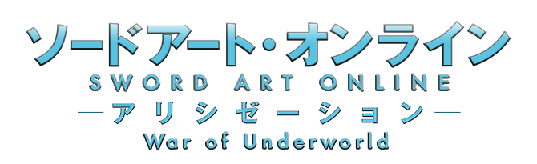

劇情大綱
艾恩葛朗特篇
桐人（桐谷和人）是使用NERvGear 遊玩VRMMORPG「Sword Art Online」的玩家。
很幸運的參與過封閉測試、並買下正式版的和人，在2022年11月6日與正式營運就馬上「完全潛行Full Dive」的9999名玩家一起，享受著正式版的SAO世界。
但感動是短暫的，四小時多後，桐人發現封測時確實存在的登出指令竟然消失。
認為只是系統暫時出錯的桐人以及開始陷入混亂的所有玩家一起被傳送到開始地點廣場，但頭上傳來的不是等待許久的故障公告，
而是自稱是SAO遊戲設計者「茅場晶彥」的人淡淡開始的死亡遊戲說明：不能登出是遊戲的正常現象，
只有打倒位於「艾恩葛朗特頂樓第100層的Final Boss」——達成完全攻略——才是離開這個世界唯一的方法。
並且，在遊戲內Game Over或是嘗試脫下NERvGear，玩家會立刻被NERvGear發出的高頻率微波破壞腦部而死亡。
因為恐懼的影響
，最初的一個月內死亡人數就突破了2000多人，然而玩家們終究習慣了這個真實存在的異世界。
兩年後的今日（2024年10月17日），尚有6000多名玩家存活，最前線已推進到第74層，桐人在第74層中使出了二刀流，並打倒了頭目－青眼惡魔。
在第75層中，桐人發現血盟騎士團的團長－希茲克利夫就是最終Boss茅場晶彥……
妖精之舞篇
經過桐人（桐谷和人）和希茲克利夫在艾恩葛朗特75層的死鬥後，包括桐人在內的6000名SAO玩家，回到了現實世界。
但包括明日奈在內，尚有300名玩家仍然昏迷不醒。SAO的營運公司也被明日奈父親的公司收購。
在2025年1月19日，和人探望仍在病床的明日奈時，遭到明日奈父親的養子須鄉伸之的鄙視挑釁。
之後和人從在艾基爾那得到了亞絲娜可能被囚禁在另一款VRMMORPG「Alfheim Online」的情報。
桐人為了解救亞絲娜而進入了該遊戲，初到這異世界時，遇見了自己的表妹莉法（桐谷直葉
幽靈子彈篇
桐人（桐谷和人）在莉法等人的幫助下、打破須鄉伸之陰謀救出亞絲娜後的2025年12月。
菊岡誠二郎以半威脅半利誘的方式請和人協助調查發生在VR射擊遊戲「Gun Gale Online」內的奇異事件
遇有著天藍色短髮的女孩伸出援手，與桐人聯手挑戰「死槍」……
主要角色
亞絲娜／結城明日奈
桐人／桐谷和人
愛麗絲
詩乃
尤吉歐
莉法／桐谷直葉